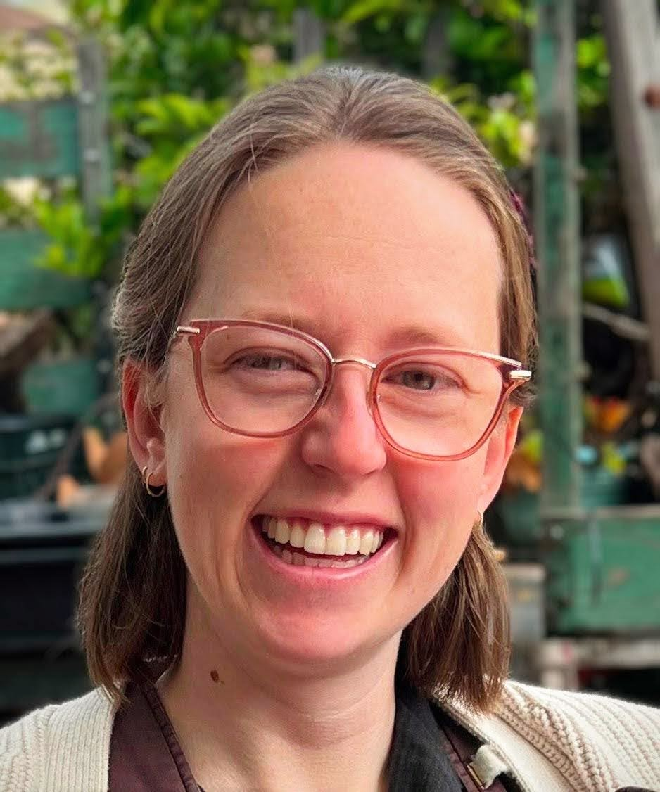

I'm Zofia Stanley, an applied mathematician (PhD) and Director of Research at QSIDE. I use quantitative methods to advance racial justice and criminal legal reform, through research, expert testimony, and data tools for defense attorneys, nonprofits, and local governments.
I led technical development of the RJA Disparity Screener, a free tool built with the California Office of the State Public Defender that generates court-ready reports on post-conviction racial disparities.

About
My training is in applied mathematics, and I began my career in weather and climate modeling [where? e.g., NOAA], working with large datasets and complex numerical models. [One or two sentences: what drew you from climate to criminal justice, and what drives your work now.]
At QSIDE, I lead research on [research focus areas].
I have worked with the California Office of the State Public Defender and the Responsible Business Initiative for Justice, and my work has been funded by the Walmart Foundation and Arnold Ventures. [workshop this paragraph]
My peer-reviewed publications, in climate modeling and criminal legal policy, are listed on Google Scholar.
Get in touch